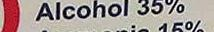

--file:0.jpg
--English:
--French:

--file:0_cro_pped_10.jpg
--English:Fuerto Hico
--French:Puerto Hico

--file:0_cro_pped_11.jpg
--English:PESLTIDIIG ITOrTia .
--French:PESCHIDINQ HNOEIQUON.

--file:0_cro_pped_12.jpg
--English:- MY
--French:e 3
--file:0_cro_pped_13.jpg
--English:atorvastatin.
--French:atorvastatin.

--file:0_cro_pped_14.jpg
--English:
--French:

--file:0_cro_pped_15.jpg
--English:Manufactured by:
--French:Manufactured bv:

--file:0_cro_pped_16.jpg
--English:
--French:

--file:0_cro_pped_17.jpg
--English:‘Oee package insert Tor full
--French:See package Insert for fuil

--file:0_cro_pped_18.jpg
--English:
--French:

--file:0_cro_pped_19.jpg
--English:
--French:

--file:0_cro_pped_20.jpg
--English:Tena [19P]
--French:fseeliSPl

--file:0_cro_pped_21.jpg
--English:
--French:

--file:0_cro_pped_22.jpg
--English:NDC 0591-3774-30
--French:NDC 0591-3774-30

--file:0_cro_pped_23.jpg
--English:. 30 Tablets Rx only
--French:. 30 Tablets Rx only

--file:0_cro_pped_24.jpg
--English:
--French:

--file:0_cro_pped_25.jpg
--English:Tablets
--French:Tablets

--file:0_cro_pped_26.jpg
--English:10 mg*
--French:10 ma*

--file:0_cro_pped_27.jpg
--English:
--French:

--file:0_cro_pped_28.jpg
--English:Atorvastatin
--French:Atorvastatin

--file:0_cro_pped_29.jpg
--English:Calcium
--French:Calcium

--file:0_cro_pped_30.jpg
--English:
--French:

--file:0_cro_pped_31.jpg
--English:002ISHL m MFOM i X %08) 0dd AT
--French:0opelsLL … M__®… ; x %08) 044 TT T AI

--file:1.jpg
--English:e T torvastatin Calcium Tablets 30 Tablets Rx only
--French:rs torvastatin Calcium Tablets 30 Tablets Rx only

--file:1_cro_pped_10.jpg
--English:
--French:

--file:1_cro_pped_11.jpg
--English:
--French:
--file:1_cro_pped_12.jpg
--English:Manufactured bv:
--French:Manufactured bw-
--file:1_cro_pped_13.jpg
--English:‘prescribing intformation.
--French:prescnbing intformation.

--file:1_cro_pped_14.jpg
--English:Puerto Rico
--French:Puerto Rico

--file:1_cro_pped_15.jpg
--English:‘See package insert for full
--French:See package insert for full

--file:1_cro_pped_16.jpg
--English:
--French:
--file:1_cro_pped_17.jpg
--English:Pfizer Pharmaceuticals LLC
--French:Pfizer Pharmaceuticals LLC

--file:1_cro_pped_18.jpg
--English:*Etach tablel contair
--French:*Each tablet contair

--file:1_cro_pped_19.jpg
--English:
--French:

--file:1_cro_pped_20.jpg
--English:
--French:

--file:1_cro_pped_21.jpg
--English:‘caicium equivalent to 40 mg.
--French:caïcium equivalent to 40 mg

--file:1_cro_pped_22.jpg
--English:30 Tablets Rx only
--French:30 Tablets Rx oniv

--file:1_cro_pped_23.jpg
--English:temperature 20-25°C (68-77°F)
--French:temperature 20-25'C (68-77'F)

--file:1_cro_pped_24.jpg
--English:NDC 0591-3776-30
--French:NDC 0591-3776-30

--file:1_cro_pped_25.jpg
--English:
--French:

--file:1_cro_pped_26.jpg
--English:Tablets
--French:Tablets

--file:1_cro_pped_27.jpg
--English:
--French:

--file:1_cro_pped_28.jpg
--English:Atorvastatin
--French:Atorvastatin

--file:1_cro_pped_29.jpg
--English:Calcium
--French:Calcium

--file:1_cro_pped_30.jpg
--English:ooooo
--French:ooooo

--file:1_cro_pped_31.jpg
--English:00622541 L £1660 08) 044
--French:006€esth 44 EL6SD 08) Odd
--file:2.jpg
--English:HSINYYA[ON] 06559,866¢ Y, sal -50 NDC 43598-6 90 Tablet:
--French:HSIN@VA[ON] 06459 864£7 “soi -50 NDC 23598-6 90 Tablet

--file:2_cro_pped_10.jpg
--English:
--French:

--file:2_cro_pped_11.jpg
--English:to each patient
--French:to each patient

--file:2_cro_pped_12.jpg
--English:faccompanying Medic:
--French:Jaccompanying Medicz

--file:2_cro_pped_13.jpg
--English:Extended-Release Tablets. USP (XL
--French:Extended-Release Tablets. USP (XL

--file:2_cro_pped_14.jpg
--English:
--French:
--file:2_cro_pped_15.jpg
--English:ONCE-DAILY
--French:ONCE-DAILY

--file:2_cro_pped_16.jpg
--English:Dispensethe |
--French:Dispensethe }
--file:2_cro_pped_17.jpg
--English:
--French:

--file:2_cro_pped_18.jpg
--English:‘contain bupropion hydrochloride.
--French:contain bupropion hydrochloride.

--file:2_cro_pped_19.jpg
--English:NDC 43598-099-90
--French:NDC 43598-655-90

--file:2_cro_pped_20.jpg
--English:90 Tablets
--French:90 Tablets

--file:2_cro_pped_21.jpg
--English:
--French:

--file:2_cro_pped_22.jpg
--English:
--French:

--file:2_cro_pped_23.jpg
--English:Rx Only
--French:Rx Only

--file:2_cro_pped_24.jpg
--English:
--French:

--file:2_cro_pped_25.jpg
--English:Hydrochloride
--French:Hydrochloride

--file:2_cro_pped_26.jpg
--English:150 mg
--French:150 mg

--file:2_cro_pped_27.jpg
--English:0 o35 d g s dng el Dr.Reddy's @
--French:05 es dAq nsn dnq es Dr.Reddy's À

--file:2_cro_pped_28.jpg
--English:NO
--French:NO

--file:2_cro_pped_29.jpg
--English:Buog
--French:6wos

--file:2_cro_pped_30.jpg
--English:AN ‘obneddne, el UBO3D: apomyoeynuey 172079 1041U00 45125 2 01402 1290 1 Burguosaxd oo wershyd A Y500 WS 1oH ordoidn Papuoy
--French:AN obneddnes euveyg vagns 9 pomyoepnuey 4/0 20 Januog sn 85 Z 01002 32310N 1 Gurquosoxd oo vs hyd A 19vS00Tns( 0H toydoxdne -papuape y

--file:2_cro_pped_31.jpg
--English:204 ponya 88111 AN ‘361 ‘sjenaoeLRY i
--French:104 poimya 8824 AN “ofr “sjeonnoceuvey p

--file:2_cro_pped_32.jpg
--English:R TSl A {42 0:89)0 oju1 26esop Jaj UogewLio 2.0 4ep 1oyaEaau0 o 51 SURII0D oI} 952
--French:Àp e R GolZ 04.89)0 oyui aesop 104 UOne u æ10hpep vjgey au0 æ 54 suIepuoD aJez 9 se

--file:3.jpg
--English:FNYAON fomeaduel wooyp (4oLl 01089) ‘UogeworaBes0p ) UOTEULD PARIP % 10 APEP 191GE) U0 Bt 61008 suEHO3 9 G 9seoR 6-30, NDC 43598-6 VARRING. Do notuee s combinsion buPROPion drochloride
--French:FS}N&vA[ON {eimæiaduaz wooyp z 04089) -Vogeruuoqu, aesop 4} VoneO pappeup sæ 10 Apep poige; auo axe Bu 00s suejuos jÎge; oseop 6-30) NDC 43598-6 WARNINE e rotuse 1s combiraten] buPROPion drochloride

--file:3_cro_pped_10.jpg
--English:
--French:

--file:3_cro_pped_11.jpg
--English:Wn bupropion hydrochloride.
--French:hn bDupropion hydrochioride.

--file:3_cro_pped_12.jpg
--English:ONCE-DAILY
--French:“ONCE-DAILY

--file:3_cro_pped_13.jpg
--English:to each patient
--French:to each patient

--file:3_cro_pped_14.jpg
--English:- WARNIN(
--French:“ WARNIN(

--file:3_cro_pped_15.jpg
--English:
--French:

--file:3_cro_pped_16.jpg
--English:Extended-Release Tablets, USP (XL)
--French:Extended-Release Tablets, USP (XL)
--file:3_cro_pped_17.jpg
--English:Jaccompanying Medication Guide]
--French:faccompanying Medication Guidef

--file:3_cro_pped_18.jpg
--English:
--French:

--file:3_cro_pped_19.jpg
--English:NDC 43598-6956-30
--French:NDC 43598-656-30

--file:3_cro_pped_20.jpg
--English:S00 mg
--French:53500 ma

--file:3_cro_pped_21.jpg
--English:Prin
--French:Prin

--file:3_cro_pped_22.jpg
--English:
--French:

--file:3_cro_pped_23.jpg
--English:Rx Only
--French:Rx Only

--file:3_cro_pped_24.jpg
--English:Hydrochloride
--French:Hydrochloride

--file:3_cro_pped_25.jpg
--English:bup
--French:bup

--file:3_cro_pped_26.jpg
--English:
--French:

--file:3_cro_pped_27.jpg
--English:buPROPion
--French:buPROPion

--file:3_cro_pped_28.jpg
--English:
--French:

--file:3_cro_pped_29.jpg
--English:
--French:

--file:3_cro_pped_30.jpg
--English:| AN ‘@Bedcney euley Ua5eD (g pamjoeynuey 1720 9% 110109 dsn 52 0102 123 uBugyosoxd o0 werashyd L3O¥S00 VNS
--French:L AN ‘a6neddnez seuveug vageD (g ponpoeynuey L/20 w Yjonuoddsn SZ Oba07 1E u Gugquosoxd 00 wes h À L'ASYSO0 IVNS

--file:3_cro_pped_31.jpg
--English:88411 AN ‘261 jeonnedEuleL Ag pan:
--French:8824 AN “ofr jpornaceueus ‘kg pony

--file:4.jpg
--English:Each Tablet cortalng: _|_NDC 0527-1648-01 e b Hydrocodone | . SR Bitartrate and (1 g e Acetaminophen remsmss— | Tablets, USP Rer LR - meleant cos PACKAGE NOT CHILD-RESISTANT) T packago I ok itanded for houseioid Disponsa the accompanying = MBQICAT0N GUKS [0 BaCT PETSNTT KEEP THEE AND ALL MEDICATION. IOUT OF THE REACH OF CHILDREN, 18 4 B only i [ [ [ I | [ | i SR A BT T : 150 U Crfle o Torrai: 5 mg/300 mg [ [ ! | [ "Tils it Fas boen sealod for your RO 100 TABLETS Priladelphia, PA 19154 0527-1646-01 Distribud by: Larmett Corpany, Inc.
--French:Ec fablet corles. _| NDC 0527-1646-01 R Hydrocodone | — E Bitartrate and(IT pn m Acetaminophen msrwryeeæ— — | Tablets, USP ec à SIM sn rs PACRAGE NOT CHILD-RESISTANT) Ts pc e mt mtn r houssliié Disponse the accompanying TR MédiCaToN GUIOS 1O GACT DETONT KEEF TH AND ATT MENICATION IOUT QF THE REACH OF CHILDREN, 15 44 Bconty Ï [ [ [ | [ [ I i SS DSCES 775 : e SP Cl foun en 5 mg/300 mg [ [ ! [ [ Th bott has boer ssalud for ÿour promenort] 1600 TABLETS Philadelphia) PA 19154 0527-1646-01 Distrbr by: Larmatt Comipan, Inc.

--file:4_cro_pped_10.jpg
--English:
--French:

--file:4_cro_pped_11.jpg
--English:
--French:

--file:4_cro_pped_12.jpg
--English:
--French:

--file:4_cro_pped_13.jpg
--English:
--French:

--file:4_cro_pped_14.jpg
--English:
--French:
--file:4_cro_pped_15.jpg
--English:
--French:
--file:4_cro_pped_16.jpg
--English:Aratrsibiras Eebasreads e
--French:cnc bäre arremeation

--file:4_cro_pped_17.jpg
--English:
--French:

--file:4_cro_pped_18.jpg
--English:Qe at 20° to 25°L 8 W 77°F)
--French:Siure at 20" to 25°C 68" to 77°F}

--file:4_cro_pped_19.jpg
--English:
--French:

--file:4_cro_pped_20.jpg
--English:[Sea USP Controlied Room Temperatune].
--French:[Ses USP Controiled Room Temperature].

--file:4_cro_pped_21.jpg
--English:
--French:

--file:4_cro_pped_22.jpg
--English:‘This bottie has been saaled for your
--French:Thig bottie has been sealad for your

--file:4_cro_pped_23.jpg
--English:
--French:

--file:4_cro_pped_24.jpg
--English:Medication Guids to each patient
--French:Medication Gukde to each patiant

--file:4_cro_pped_25.jpg
--English:100 TABLATS
--French:100 TABLETS

--file:4_cro_pped_26.jpg
--English:‘5 mg of Hydrocodone Bifartrate, USP and
--French:5 mgat Hydrocodone Bitartrete, USP and

--file:4_cro_pped_27.jpg
--English:Lispense e accompanying
--French:Dispanss the accompanying

--file:4_cro_pped_28.jpg
--English:‘This packagse le not Imtended for housshold
--French:This package l6 nc Intended for housshoid

--file:4_cro_pped_29.jpg
--English:PACKAGE NOT CHILD-RESISTANT
--French:PACKAGE NOT CHILD-RESISTANT

--file:4_cro_pped_30.jpg
--English:300 mg of Acetaminophen, USP
--French:300 mg of Acetaminophern, USP

--file:4_cro_pped_31.jpg
--English:R Only
--French:Reoniy

--file:4_cro_pped_32.jpg
--English:NDC 0527-1648-01
--French:NDC 0527-1646-01

--file:4_cro_pped_33.jpg
--English:18 |48
--French:18 46

--file:4_cro_pped_34.jpg
--English:
--French:

--file:4_cro_pped_35.jpg
--English:nvdrocoaone
--French:rHvarococdone

--file:4_cro_pped_36.jpg
--English:
--French:

--file:4_cro_pped_37.jpg
--English:Acetaminophen
--French:Acetaminophen

--file:4_cro_pped_38.jpg
--English:Bitartrate and
--French:Bitartrate and

--file:4_cro_pped_39.jpg
--English:Tablets, USP
--French:Tablets, USP

--file:4_cro_pped_40.jpg
--English:
--French:

--file:4_cro_pped_41.jpg
--English:Bl o L) peLL] e
--French:“euchopiIe ue JUU Ipaueio
--file:5.jpg
--English:SRS NDC 0527-1648-01 D - [Hydrocodone | ., ST Bitartrate and (1L ‘S0 packags Insart for comphets TR . Acetaminophen| — St gttt Tablets, USP 3 0527-1648-01 PAGKAGE NOT CHILD-RESISTANT S 42 2T BTN 560 USF Uormmlied Aoor Tmperaues] 10 mg/300 mg “This packags I ot inanded for household Cispanss the ageomparying - MBLICHLION GOl [0 BT paiiat. Philadelphia,PA 18154 Distrbouted by: lLannett Company, Inc. KEEP THIS AND ALL WEDICATION . DUT OF THE REAGH OF CRILOWEN, R only 643 This bottio has been sealad for = n 100 TABLETS
--French:E NDC 0527-1648-01 ongaihecaniaien 1 |Hvdrocodone| — — Bitartrate and (I ‘Suo pactage Insertfor complotg P T Acetaminonhen| r pn Tablets, USP 3 0527-1648-01 PACGKAGE NÔT CHILD-RESISTANT Ser dF b3 65775 Ts UP Corraise n Temparare]. 110 mg/300 mg_ This packags B not Iianded for housahold Dispanse the agomiparÿiig L Medicution-Guite torgacir patient- Philadelphia/PA 18154 Déstrouted bry: |Lamnatt Company, Inc. KEEP THES ARD ALL MEDICATION ë DOT OF THE REAGH OF CAILDREN) Reonty 643 This boitio héss baëri séaled for T m 106 TABLETS

--file:5_cro_pped_10.jpg
--English:
--French:
--file:5_cro_pped_11.jpg
--English:
--French:

--file:5_cro_pped_12.jpg
--English:
--French:

--file:5_cro_pped_13.jpg
--English:
--French:
--file:5_cro_pped_14.jpg
--English:
--French:

--file:5_cro_pped_15.jpg
--English:prascribing iInformadion.
--French:prescribing Iformedion.

--file:5_cro_pped_16.jpg
--English:
--French:

--file:5_cro_pped_17.jpg
--English:
--French:

--file:5_cro_pped_18.jpg
--English:
--French:

--file:5_cro_pped_19.jpg
--English:‘See package Insert for complets
--French:Ses package Insert for complete

--file:5_cro_pped_20.jpg
--English:
--French:

--file:5_cro_pped_21.jpg
--English:
--French:

--file:5_cro_pped_22.jpg
--English:
--French:

--file:5_cro_pped_23.jpg
--English:MBERCAUON GUIOe [0 8ac Pauet.
--French:MORCEUON QUICS (O GECN GOUET

--file:5_cro_pped_24.jpg
--English:100 TABLATS
--French:100 TABLETS

--file:5_cro_pped_25.jpg
--English:PACKAGE NOT CHILD-RESISTANT
--French:PACKAGE NÔT CHILD-RESISTANT

--file:5_cro_pped_26.jpg
--English:Store at 20" to 25°C (88" to 77°F)
--French:Sinre at 20" to 25°C (88" to 77°F)

--file:5_cro_pped_27.jpg
--English:‘This packags Is nat intended for househoid
--French:This package &s nat Intended for housefioid

--file:5_cro_pped_28.jpg
--English:[6ee USP Controlied Room Temperahug].
--French:[Bes USP Controlled Finom Temperature).

--file:5_cro_pped_29.jpg
--English:“Thia bottle hes heen sealed for your
--French:This bottlé hees baer séaled for your

--file:5_cro_pped_30.jpg
--English:
--French:

--file:5_cro_pped_31.jpg
--English:
--French:

--file:5_cro_pped_32.jpg
--English:NDC 0527-1648-01
--French:NDC 0527-1648-01

--file:5_cro_pped_33.jpg
--English:
--French:

--file:5_cro_pped_34.jpg
--English:10 mg/300 mg
--French:10 mg/300 mg

--file:5_cro_pped_35.jpg
--English:Acetaminoohen
--French:Acetaminonhen

--file:5_cro_pped_36.jpg
--English:Hvdrocodone
--French:Hvdrocodone

--file:5_cro_pped_37.jpg
--English:Rconty
--French:Rçonty

--file:5_cro_pped_38.jpg
--English:Bitartrate and {11
--French:Bitartrate and (I

--file:5_cro_pped_39.jpg
--English:‘Tablets, USP
--French:Tablets, USP

--file:5_cro_pped_40.jpg
--English:“enAGpEI w0 puiEr] s
--French:“enthopeife u07 HBUUE] ms

--file:6.jpg
--English:[NDC 64376-643-01] [ Hydrocodone ™ Bitartrate and /Acetaminophen Tablets, USP AR e (100 Tablets PAR Dscription Exch Gblet contains: “WARNING: 1y T o " &8 = = > 2 Keep TS Ay AT DROGT OO © RS Ctonen o 2 5 2 3 storag:storeat 2010 28° e zs t0 77°) e USP Controled Hoor Temperatare]
--French:NDC 64376-648-01) [} Hydrocodone- Bitartrate and Acetaminophen Tablets, USP RWAJuTTEU TT K Q 100 Tablets PAR Deseription Esch tablet contain: WARNING Viay De rs T és —- =; © 2 REN AN A DRUSS OUT © DEn CR l 2 3 S 3 Sirag: Stoe t 29-te 205j ze to 77* [sos USP Controliod Room Temperature,

--file:6_cro_pped_10.jpg
--English:
--French:

--file:6_cro_pped_11.jpg
--English:
--French:

--file:6_cro_pped_12.jpg
--English:
--French:

--file:6_cro_pped_13.jpg
--English:
--French:

--file:6_cro_pped_14.jpg
--English:‘Hydrocodone Bitartrate ™ 75mng
--French:Hydrocodone Bitartrate 75ma
--file:6_cro_pped_15.jpg
--English:
--French:

--file:6_cro_pped_16.jpg
--English:
--French:
--file:6_cro_pped_17.jpg
--English:
--French:

--file:6_cro_pped_18.jpg
--English:WARDN
--French:*WagnN

--file:6_cro_pped_19.jpg
--English:
--French:

--file:6_cro_pped_20.jpg
--English:Description: Each tablet contains
--French:Description: Each tablet contains

--file:6_cro_pped_21.jpg
--English:bghtresisiant contamner waith a
--French:bghtresistant contamner wiha

--file:6_cro_pped_22.jpg
--English:Chuig-resistant ciosure,
--French:CMIid-resiStant ciosure,

--file:6_cro_pped_23.jpg
--English:
--French:

--file:6_cro_pped_24.jpg
--English:
--French:

--file:6_cro_pped_25.jpg
--English:UKpense Me accompanying |
--French:—Hpense Me accompenying |

--file:6_cro_pped_26.jpg
--English:Hx only
--French:Hx onlv

--file:6_cro_pped_27.jpg
--English:
--French:

--file:6_cro_pped_28.jpg
--English:
--French:

--file:6_cro_pped_29.jpg
--English:'KEEP THIS AND ALL DRUGS OUT
--French:KEEP THIS AND ALL DRUGS OUT

--file:6_cro_pped_30.jpg
--English:
--French:

--file:6_cro_pped_31.jpg
--English:Pharmacist: Dispense in a tight,
--French:Pharmacist: Dispense in a tight,

--file:6_cro_pped_32.jpg
--English:NDC 64376-649-01
--French:NDC 64376-649-01

--file:6_cro_pped_33.jpg
--English:
--French:

--file:6_cro_pped_34.jpg
--English:
--French:

--file:6_cro_pped_35.jpg
--English:PRAR
--French:PAR

--file:6_cro_pped_36.jpg
--English:
--French:

--file:6_cro_pped_37.jpg
--English:Bitartrate and
--French:Bitartrate and

--file:6_cro_pped_38.jpg
--English:Acetaminophen
--French:Acetaminophen

--file:6_cro_pped_39.jpg
--English:Hvdrocodone™
--French:Hvdrocodone”

--file:6_cro_pped_40.jpg
--English:1 7.5 ma/300 mq |
--French:WEATIUTEUINIUR

--file:6_cro_pped_41.jpg
--English:
--French:

--file:6_cro_pped_42.jpg
--English:y0077
--French:10977

--file:6_cro_pped_43.jpg
--English:
--French:

--file:7.jpg
--English:o Noc as-3455 Ronly | evetiracetam &
--French:e Noc 450-345-05 — Rontr) E evetiracetam Ë

--file:7_cro_pped_10.jpg
--English:
--French:

--file:7_cro_pped_11.jpg
--English:
--French:

--file:7_cro_pped_12.jpg
--English:| PHARMACIST. Dispense the Medication
--French:| PHARMACIST. Dispense the Medication
--file:7_cro_pped_13.jpg
--English:
--French:
--file:7_cro_pped_14.jpg
--English:
--French:

--file:7_cro_pped_15.jpg
--English:‘with achila-resistant cosure.
--French:wth achid-resistan cdosure.

--file:7_cro_pped_16.jpg
--English:Usual dos age:
--French:Usual dosage:

--file:7_cro_pped_17.jpg
--English:
--French:
--file:7_cro_pped_18.jpg
--English:
--French:

--file:7_cro_pped_19.jpg
--English:recommendations
--French:recommendations.

--file:7_cro_pped_20.jpg
--English:levetiracetam USP.
--French:levetiacetam USP.

--file:7_cro_pped_21.jpg
--English:1See USF coniroded room iemperature).
--French:|5ee U5T comtroëed roomtemperature).

--file:7_cro_pped_22.jpg
--English:ach fiim-coateatablet contains:
--French:ach film-coatedtablet contains:

--file:7_cro_pped_23.jpg
--English:
--French:

--file:7_cro_pped_24.jpg
--English:2 CloLHC(od Fio 77T ), excurss 30N s permitied
--French:2U LGlioZ3'L(05 Fio// F),excurse sions permiiied

--file:7_cro_pped_25.jpg
--English:
--French:

--file:7_cro_pped_26.jpg
--English:Rev: JUNX1S
--French:Rev: JUN2015

--file:7_cro_pped_27.jpg
--English:0772201 ForSoicoMsaltcam US LLC.
--French:0772201 Fer:SoicoHeaitcam US LLC.

--file:7_cro_pped_28.jpg
--English:
--French:

--file:7_cro_pped_29.jpg
--English:
--French:

--file:7_cro_pped_30.jpg
--English:Zheiiang Hushai Pharmaceutical Co_ Ltd.
--French:Zheïiang Hustai Pharmaceutical Co_Ltd.

--file:7_cro_pped_31.jpg
--English:500 mg
--French:500mga

--file:7_cro_pped_32.jpg
--English:NDC 43547-345-06 Ronly
--French:NDC 43547-345-06 Ronly

--file:7_cro_pped_33.jpg
--English:
--French:

--file:7_cro_pped_34.jpg
--English:Tablets, USP
--French:RE UTCM ETE

--file:7_cro_pped_35.jpg
--English:Extended-Release
--French:Extended-Release

--file:7_cro_pped_36.jpg
--English:Levetiracetam
--French:Levetiracetam

--file:7_cro_pped_37.jpg
--English:Rou T
--French:æou at

--file:7_cro_pped_38.jpg
--English:
--French:

--file:8.jpg
--English:o Each fim-coated & TEENTERETa S Storage: Sioe 3120 0 T5°C TS USP Conales oo Temperatae] Ustal Dosage: See package niei fr compile Pharmacit: Dspense 113 53 3 Chid et Cosute KEEP THIS AND ALL WEDICINES OUTOF THE REACH OF CHILDREN. Nanfacued by China Resoutces Sake Praacaica Co_ 11l 003, Jgfr T Sveel Tonziou DT Bejng 101111, Ciea Wanfaciued or Scan Pramace s I BT Lancaser v #710, Greal Valey U TSUE PERTEIVANE 10355 Tcoaie wih
--French:mT Each fim-coated TEVETASES TON USF" Sorage: se 127 105 C TS SP Conrales Roum Tenpératae] Usual Dosage: See package nsetforcomplle PhanmacisE Dsperse 5217 à hidessat cosure KEEP TRIS AND ALL MEDICINES OUT-OF TRE REACH OF CHILDREN. Vandaciret r ‘Civna Resources Sike Phammaceuiea C0 F 3 Inghat 0 Sre2t lonran Ds Bejng 101111 Ch Manutadures 1 “Secan Prammace es rc BT CancaserAve. 210 Great Valey æ MV, PennsyVana 12255 Tmn w

--file:8_cro_pped_10.jpg
--English:
--French:

--file:8_cro_pped_11.jpg
--English:‘Secan Phamaceuticals. Inc.
--French:Secan Pharmaceuficais Inc.

--file:8_cro_pped_12.jpg
--English:
--French:

--file:8_cro_pped_13.jpg
--English:
--French:

--file:8_cro_pped_14.jpg
--English:
--French:

--file:8_cro_pped_15.jpg
--English:
--French:
--file:8_cro_pped_16.jpg
--English:Dispense accompanying
--French:Dispense accompanying

--file:8_cro_pped_17.jpg
--English:3 child-resistant closure.
--French:à child-resistant cosure.
--file:8_cro_pped_18.jpg
--English:
--French:

--file:8_cro_pped_19.jpg
--English:
--French:

--file:8_cro_pped_20.jpg
--English:KEEP THIS AND ALL MEDICI INES OUT OF
--French:KEEP THIS AND ALL MEDICI 1NES OUT OF

--file:8_cro_pped_21.jpg
--English:81 Lancaster Ave #210, Great Valley Center,
--French:B1 Lancaster Ave 210 Great Valley Center

--file:8_cro_pped_22.jpg
--English:
--French:

--file:8_cro_pped_23.jpg
--English:China Resources Saike Phamqmaceutical Co., Lid.
--French:China Resources Saike Pharmaceutical Co… Ltd.

--file:8_cro_pped_24.jpg
--English:
--French:

--file:8_cro_pped_25.jpg
--English:Beijing. 101111, Chir
--French:Beijina. 101111 Chir

--file:8_cro_pped_26.jpg
--English:- Usual Dosage: See package insert for complete
--French:- Usual Dosage: See package insert for complete

--file:8_cro_pped_27.jpg
--English:+ Pharmacist: Dispense m a tight container with
--French:» Pharmacist: Dispense n a tioht container with

--file:8_cro_pped_28.jpg
--English:‘Storage: Store at 20° to 25°C (68° to 77°F)
--French:Storage: Store at 20° to 25°C (68° to 77°F)

--file:8_cro_pped_29.jpg
--English:‘Mavem, Fennsylvania 19355
--French:Maivem, Fennsylvania 13355

--file:8_cro_pped_30.jpg
--English:LR 13
--French:CR AIE 408

--file:8_cro_pped_31.jpg
--English:'« Each film-coated tablet contains 1,000 mg of NDC 4348912408 Reonly
--French:‘ Each film-coated tablet contains 1000 mg of | NDC 43489-124-08 — Ronly

--file:8_cro_pped_32.jpg
--English:SECAN
--French:SECAN

--file:8_cro_pped_33.jpg
--English:Levetiracetam
--French:Levetiracetan

--file:8_cro_pped_34.jpg
--English:1,000 mg
--French:1000 mg

--file:8_cro_pped_35.jpg
--English:
--French:

--file:8_cro_pped_36.jpg
--English:Tablets, USP
--French:ETEN

--file:8_cro_pped_37.jpg
--English:
--French:

--file:9.jpg
--English:e NUU&L(I FUHNULE AMELIOH == el .apmw e I o w =
--French:MS RL EOTE WUŒLŒ BEI U E ( 150 : Bl c .apmu u fvorure | e fl … nc

--file:9_cro_pped_10.jpg
--English:INAGTIVE/NUN-MEUIGINAL INGREUIENT S
--French:INAGIVC/ANUN-MEDIGINAL INGREDIENTS.

--file:9_cro_pped_11.jpg
--English:endium phosphate monobasic flavor
--French:sodium nhosnhate monobasic flavor
--file:9_cro_pped_12.jpg
--English:[ R e Ry L
--French:f #* 155005 ETE

--file:9_cro_pped_13.jpg
--English:INGRCUICNT IVAL TIF/
--French:INGHCDICNT INACES/

--file:9_cro_pped_14.jpg
--English:A O T O FarertF
--French:e e E ue u A
--file:9_cro_pped_15.jpg
--English:Bos ooty b ot Soeb s o G A S At e
--French:ETE MEN DIS TISN E sA e

--file:9_cro_pped_16.jpg
--English:contact a Poison Lontrol Lenter ngnt away
--French:contact a Poison Lontroi Lenter rignt away

--file:9_cro_pped_17.jpg
--English:INGREUICNT AL T C DICAMENTEUX © NDGC 0273-0345-06 NPN 02048787 ACTIVE/MEDIGINAL INGREDIENT Aciaul:
--French:IGHEDICINT ACTIF AUC DICANMICINICUX - NDC 0273-0345-06 NPN 02048787 ACTIVE/MEDICINAL INGREDIENT. ACIQUE:

--file:9_cro_pped_18.jpg
--English:chafeur Conserver 2 une température de 15
--French:chaleur Conserver à une température de 15

--file:9_cro_pped_19.jpg
--English:
--French:

--file:9_cro_pped_20.jpg
--English:tornnarat irea hetwean & G-RRF (16 2Ny
--French:temnaratires hatwmen RO-ARCE ME -anfpi

--file:9_cro_pped_21.jpg
--English:DOSAGE AND ADMINISTRATIOI
--French:DOSAGE AND ADMINISTRATIOI

--file:9_cro_pped_22.jpg
--English:e NI S Rt Sy ey - ML Sy B L o e e e e
--French:LS DO t E A N S S MRE SEME T IGN “l dther fdue cp ue L E

--file:9_cro_pped_23.jpg
--English:Fompprit et el i o st e e s
--French:sourmiesoltion toeid'ieihe orecentior of

--file:9_cro_pped_24.jpg
--English:1 75074548
--French:Î 75074548

--file:9_cro_pped_25.jpg
--English:
--French:

--file:9_cro_pped_26.jpg
--English:B ciitin 2 o 08 sk s o s Hirassss, R s O e S I S S
--French:Ü 0 nn ds es A ns 11008 68 sb OS pe se Mivaere

--file:9_cro_pped_27.jpg
--English:1 INDICATIONS ET MODE D'EMPLO
--French:| /NDICATIONS ET MODE D'EMPLOI

--file:9_cro_pped_28.jpg
--English:SNl e BN e R A, g TRl L SRR T b i o s
--French:CR e R 1. l ds

--file:9_cro_pped_29.jpg
--English:de vaporiser e produit en direction dune
--French:d'e vaporiser le produit en direction d'Une

--file:9_cro_pped_30.jpg
--English:1 COMPLETE DETAI
--French:! COMPLETE DETAI

--file:9_cro_pped_31.jpg
--English:T s e e ) & SR L S T T et SR PN o AR AR S I st S G 0E i i pe o gty I i
--French:MS N J A EN N US PE REN E S TT REN A VRI T Pontant 1 1902 0/ Hione datérdrie) L Én

--file:9_cro_pped_32.jpg
--English:DESCRIPTION: Oral-B Minute-Foam®is a
--French:DESCRIPTION: Oral-B Minute-Foam®is a

--file:9_cro_pped_33.jpg
--English:Lecomenant he Qo pas elre perce v jeie a
--French:LÉCOMENANT NE CON PAS CC DEFCE 14 JEIC A

--file:9_cro_pped_34.jpg
--English:T
--French:bulles —

--file:9_cro_pped_35.jpg
--English:GO SRl T SOy i 4 9207
--French:E L aininn d 9204 4

--file:9_cro_pped_36.jpg
--English:1-844-305-0846
--French:_1-844-305-0846

--file:9_cro_pped_37.jpg
--English:g 655811 2950334 Rev10/2014
--French:y 655811 295033A Rev10/2014

--file:9_cro_pped_38.jpg
--English:SRt R R e eSSy L Rt e e
--French:P e e E L E e

--file:9_cro_pped_39.jpg
--English:V oviital sucralose phosphate de sodium
--French:Ü xvñtol sucralose. phosphate de sodium

--file:9_cro_pped_40.jpg
--English:NON-MEDICAMENTEUX : Fau purifice,
--French:NON-MEDICAMENTEUX ! Eau purifiée,

--file:9_cro_pped_41.jpg
--English:
--French:

--file:9_cro_pped_42.jpg
--English:B, (000 BBty R SR
--French:M ULIN ION E SIn ILRIN RE EOTE

--file:9_cro_pped_43.jpg
--English:NEW AND IMPROVED EORMUL
--French:RS TT DR 0U SON SOR NIUTE

--file:9_cro_pped_44.jpg
--English:‘ an optimized low
--French:\ an optimizèd low

--file:9_cro_pped_45.jpg
--English:factured for/rabnque Gardera fabri du gef.
--French:factured for/Fabniqué Garder à l'abri du gel

--file:9_cro_pped_46.jpg
--English:Made In USA
--French:Made In USA

--file:9_cro_pped_47.jpg
--English:| Contents under pressure. Do not puncture or
--French:[ Contents under pressure. Do not punctureor

--file:9_cro_pped_48.jpg
--English:| Sirpen e e absyiaie b e o ponge: S5 | Gl e S s
--French:ETE R e E N S e E E l L 10e 4

--file:9_cro_pped_49.jpg
--English:
--French:

--file:9_cro_pped_50.jpg
--English:| phosphate fiuonide (sodium fluonds)
--French:| Phosphate fluoride (sodium fluonde)

--file:9_cro_pped_51.jpg
--English:Solution moussante
--French:Solution moussante

--file:9_cro_pped_52.jpg
--English:Secouerla houteille vigoureusemant
--French:Secouer la houteille vigoureusement

--file:9_cro_pped_53.jpg
--English:
--French:

--file:9_cro_pped_54.jpg
--English:SIDE PANEL
--French:SIDE PANEL

--file:9_cro_pped_55.jpg
--English:dental caries.
--French:dental caries.

--file:9_cro_pped_56.jpg
--English:oussante pour aidel
--French:oussante pour aidéi

--file:9_cro_pped_57.jpg
--English:ce seulement (aux E-U)
--French:ce seulement (aux É-U)

--file:9_cro_pped_58.jpg
--English:| AVERTISSEMENTS : NE PAS AVALER.
--French:y / AVERTISSEMENTS : NE PAS AVALER.

--file:9_cro_pped_59.jpg
--English:R L T R B AR T e I OUantité recommandée. donner du caloium
--French:CC SRE N r SE A RE RE E E E IRS cuantité recommandée donner d'u calcivm

--file:9_cro_pped_60.jpg
--English:lopical rluoride et e AU e g
--French:Jopical Fluoride we en u8

--file:9_cro_pped_61.jpg
--English:I SEE PRODUCT INFORMATION LEAFLET FOR |
--French:l SEE PRODUCT INFORMATION LEAFLET FOR |

--file:9_cro_pped_62.jpg
--English:I NUHLE DALLUMPAGNEWONY ] DU DEANIT
--French:| ACAICE D'ACCOMTAGNEMAEN E DU PRONINT

--file:9_cro_pped_63.jpg
--English:e L LM R R S SR o o (L LR S contenant du fluorure de sodium phosphoré
--French:ETE RE E REN TSPIM TE N ATE contenant du fluorure de sodium phosphoré

--file:9_cro_pped_64.jpg
--English:I the treatment dose is swallowad, administer e L R S e e e S
--French:| the treatment dose 1s swallowed, administer Réaa tN CR A A e M E e

--file:9_cro_pped_65.jpg
--English:165 g (5.8 02)
--French:165 g (5.8 0z)

--file:9_cro_pped_66.jpg
--English:PERIAR BN WO L R Earth City, MO 63045
--French:T e E RE IEES ES Earth City, MO 63045

--file:9_cro_pped_67.jpg
--English:FRONT DISPLAY PANEL
--French:FRONT DISPLAY PANEL

--file:9_cro_pped_68.jpg
--English:CHNSE-WAIBT POIOXAEISFav L cocamidopropyl betaine, xylitol, sucra
--French:OS E PE E cocamidopropyl betaine, xylitol, sucra

--file:9_cro_pped_69.jpg
--English:Tenir hors de Ia poriée des enfanis. £n g o R ok oS L
--French:Tenir hors de la portée des enfanis. En OE RE EU SEN SSN

--file:9_cro_pped_70.jpg
--English:acidlie avec pri oplmise Das et CORCErral o Sons ot s & 1.5 8
--French:ACIQUIÉ AVEC DF ODÉINISÉ DAS EF concentrañon d'iont focrars à à A

--file:9_cro_pped_71.jpg
--English:FRRH RS Sl R AT S LTI £ V' Shake vigorously befora each Appliguer ja mousse pendant 124 minutes. ke vigorously before each use TN AR e
--French:p e srr é én Ÿ Shake vigorously before gach Appliquer Ja mousse pendant 1 à 4 minutes. e vigorously beforg each use e

--file:9_cro_pped_72.jpg
--English:'WARNINGS: DO NOT SWALLOW. Keep out of R A (A S R L
--French:WARNINGS: DO NOT SWALLOW. Keep out of ms t (hs eunt en ibar

--file:9_cro_pped_73.jpg
--English:
--French:

--file:9_cro_pped_74.jpg
--English:Minute-Foam.
--French:Minute-Foam.

--file:a.jpg
--English:
--French:
--file:a_cro_pped_10.jpg
--English:inhaladores de amoniaco
--French:Inhaladores de amoniaco

--file:a_cro_pped_11.jpg
--English:
--French:

--file:a_cro_pped_12.jpg
--English:10 capsulas desechanbi€s
--French:10 caâpsulas desechabies

--file:a_cro_pped_13.jpg
--English:
--French:

--file:a_cro_pped_14.jpg
--English:
--French:
--file:a_cro_pped_15.jpg
--English:§ FIRST AID ONLY:
--French:7 FIRST AID ONLY-
--file:a_cro_pped_16.jpg
--English:D SO eI 10 Single Use Capsules
--French:pso æ 10 Single Use Capsules

--file:a_cro_pped_17.jpg
--English:Ammonia Inhalants
--French:Ammonia Inhalants
--file:b.jpg
--English:rec ewew
--French:rec ewe»

--file:b_cro_pped_10.jpg
--English:2@ D-64625 Bensheim - Mo!
--French:@ D-64625 Bensheim « M
--file:b_cro_pped_11.jpg
--English:A8 Original Product/Mfg. by:
--French:8 Original Product/Mfg. by:

--file:b_cro_pped_12.jpg
--English:
--French:

--file:b_cro_pped_13.jpg
--English:Abies Nigra 200
--French:Abies Nigra 200
--file:b_cro_pped_14.jpg
--English:s{Dr.Reckeweg
--French:n dr.Reckeweg «

--file:c.jpg
--English:
--French:

--file:c_cro_pped_10.jpg
--English:ITEM NO
--French:ITEM NO

--file:c_cro_pped_11.jpg
--English:U1-24C
--French:U1-24C
--file:c_cro_pped_12.jpg
--English:100 AMPULES
--French:100 AMPULES
--file:c_cro_pped_13.jpg
--English:AMMONIA
--French:AMMONIA
--file:c_cro_pped_14.jpg
--English:WU B WEEE 255 Webster, MA 01570
--French:L Webster, MA 01570
--file:c_cro_pped_15.jpg
--English:
--French:

--file:c_cro_pped_16.jpg
--English:
--French:
--file:c_cro_pped_17.jpg
--English:
--French:

--file:d.jpg
--English:ABIES NIGRA LIQUID DILUTION ABIES NIGKA SBL WORILD_C1 ASS HOMOECTF TH 1
--French:ABIES NIGRA LIQUID DILUTION ABIES NIGKA SBL Wartn CI ASS HOMOECFE THT

--file:d_cro_pped_10.jpg
--English:
--French:

--file:d_cro_pped_11.jpg
--English:Ty
--French:PTSRSTRET S

--file:d_cro_pped_12.jpg
--English:
--French:
--file:d_cro_pped_13.jpg
--English:L= L o R N
--French:P PN S

--file:d_cro_pped_14.jpg
--English:
--French:

--file:d_cro_pped_15.jpg
--English:3CH
--French:3CH

--file:d_cro_pped_16.jpg
--English:ABIES NIGRA
--French:ABIES NIGRA

--file:d_cro_pped_17.jpg
--English:3CH
--French:3CH

--file:d_cro_pped_18.jpg
--English:HOMOEOPATHIC MEDICINE |
--French:HOMOEOPATHIC MEDICINE |

--file:d_cro_pped_19.jpg
--English:Hompeopathic el .
--French:Hom9eopathic QU '

--file:d_cro_pped_20.jpg
--English:HOMOEOPA
--French:“ HOMOEOPA

--file:d_cro_pped_21.jpg
--English:LIQUID DILUTION
--French:LIQUID DILUTION

--file:d_cro_pped_22.jpg
--English:| HARWAR 249403 (UTTARAKHARDI L O i pAlcasi S I
--French:HARIOWVAR 24403 (UTTARA AN r e l Comçis es

--file:d_cro_pped_23.jpg
--English:LIQUID DILUTION
--French:LIQUID DILUTION

--file:d_cro_pped_24.jpg
--English:RUBOEOGVLRA Pyl pysheonn e b dh b
--French:AOMRQEUOYLHA ('araei c OSUE 136 éc oeet

--file:d_cro_pped_25.jpg
--English:
--French:

--file:d_cro_pped_26.jpg
--English:ABIES NIGRA
--French:ABIES NIGRA

--file:d_cro_pped_27.jpg
--English:SBL
--French:SBL

--file:d_cro_pped_28.jpg
--English:\1: |
--French:\1: |
--file:e.jpg
--English:Aopue " HOMOEOPATHIC MEDICIRE S8 MOTHER &= TINCTURE| | Chehdomum MO § ii B N inde nlndin by - e VMM M. ROYCHOWDHURY & CO. 7)) \TOpoeU UV"?C\:'- ..... w5 /) Soropm Road, Bel gharia o ar s ifoloto~706-05F
--French:aumueess | P HOMOEOPATHIC MEDIONE M3 MOTHER #= _ TINCTURE Js Chehdomum M0 R îî u #—+< VadeaTadio By m 1msx V (MM) M. ROYCHOWDHURY & CO. C3 9// IORVU UV"‘:‘=\:0. ..... 198 1 Soroum Road, Bl gharia sHO 046 flroto--700-05F

--file:e_cro_pped_10.jpg
--English:WIIRLIU - /T VUV VJ
--French:VRIU - 2 VV V>

--file:e_cro_pped_11.jpg
--English:VUV LETTINEG Wittty
--French:VVV VETIIES VUF

--file:e_cro_pped_12.jpg
--English:
--French:

--file:e_cro_pped_13.jpg
--English:
--French:

--file:e_cro_pped_14.jpg
--English:\Anomoeo bondead L4dbL-) y// e N e T S S T A N ——y——
--French:(rHomoeo bonded -cv-/ V/f E A A R A E e d AN ON E A E

--file:e_cro_pped_15.jpg
--English:
--French:
--file:e_cro_pped_16.jpg
--English:HOCO DOIIGOLL LA \ AAAT . AAAA Pasiiliod Camnar
--French:TOBO DOIRIO 01 AAA4 - AAAA la4itaA l'amnar

--file:e_cro_pped_17.jpg
--English:Mage in India by
--French:Made in India by

--file:e_cro_pped_18.jpg
--English:
--French:

--file:e_cro_pped_19.jpg
--English:Dote of Mg b
--French:Doté o° figes Ü

--file:e_cro_pped_20.jpg
--English:
--French:

--file:e_cro_pped_21.jpg
--English:
--French:

--file:e_cro_pped_22.jpg
--English:
--French:

--file:e_cro_pped_23.jpg
--English:" HOMOEOPATHIC MEDICINE - ESHeesiss
--French:* HOMOEOPATHIC MEDICINE — Méréissmge

--file:e_cro_pped_24.jpg
--English:P (M M. ROYCHOWDHURY & CO.
--French:P (MN M ROYCHOWDHURY & CO.

--file:e_cro_pped_25.jpg
--English:7/1,Sarojini Road, Belgharia - RPN Sy o pa g g
--French:7/1, Sarojini Road, Belgharia - u2 A An A A L

--file:e_cro_pped_26.jpg
--English:Chelidonium M.0 -
--French:Chelidonium M.0 -

--file:e_cro_pped_27.jpg
--English:
--French:

--file:e_cro_pped_28.jpg
--English:
--French:

--file:e_cro_pped_29.jpg
--English:" TINCTURE
--French:TINCTURE

--file:e_cro_pped_30.jpg
--English:MOTHER
--French:MOTHER

--file:f.jpg
--English:
--French:

--file:f_cro_pped_10.jpg
--English:~ Fach
--French:- Fach

--file:f_cro_pped_11.jpg
--English:Ammonia 12
--French:Ammonia !>
--file:f_cro_pped_12.jpg
--English:Alcohol I9/0 A0/
--French:Alcohol 3970 aro0/

--file:f_cro_pped_13.jpg
--English:
--French:

--file:f_cro_pped_14.jpg
--English:
--French:

--file:f_cro_pped_15.jpg
--English:QLD SR e
--French:

--file:f_cro_pped_16.jpg
--English:A Respirat " st/mu/a”’ 1 inn O
--French:A Respirat " st/mll/3”' : sion ON
--file:f_cro_pped_17.jpg
--English:espiratory Stymurart for Inhalatio” only W
--French:espiratory SINTHME S for Inhalation only W
--file:f_cro_pped_18.jpg
--English:Ammonia Inha/an tory Stim/t ‘ A Respird . rnlv
--French:Ammonia Inhalan } gory Stimulant ( a Respira 1- Aantv

--file:g.jpg
--English:
--French:

--file:g_cro_pped_10.jpg
--English:ACHINOINEItn ang
--French:SIUI S 63

--file:g_cro_pped_11.jpg
--English:e AREIRASS SRR EEEvay ANSUES .
--French:eN E E ETE

--file:g_cro_pped_12.jpg
--English:| Caution: Keep out ¢
--French:| Caution: Keen outc

--file:g_cro_pped_13.jpg
--English:‘Do notuse on open g
--French:Do notuse on open =
--file:g_cro_pped_14.jpg
--English:
--French:

--file:g_cro_pped_15.jpg
--English:
--French:

--file:g_cro_pped_16.jpg
--English:unBEARable, let Sniffles &
--French:unBEARable, let Sniffles &

--file:g_cro_pped_17.jpg
--English:
--French:

--file:g_cro_pped_18.jpg
--English:= Discontinue use it
--French:@ Discontinueuseit

--file:g_cro_pped_19.jpg
--English:
--French:

--file:g_cro_pped_20.jpg
--English:- massage into chest and
--French:- massage into chestand

--file:g_cro_pped_21.jpg
--English:front of the V. Feeling
--French:front oi the IV.Feeling —

--file:g_cro_pped_22.jpg
--English:
--French:

--file:g_cro_pped_23.jpg
--English:
--French:

--file:g_cro_pped_24.jpg
--English:
--French:

--file:g_cro_pped_25.jpg
--English:
--French:

--file:g_cro_pped_26.jpg
--English:e PRIVt R A SR
--French:ts sauaut é esdaéapaes d E

--file:g_cro_pped_27.jpg
--English:
--French:

--file:g_cro_pped_28.jpg
--English:
--French:

--file:g_cro_pped_29.jpg
--English:
--French:

--file:g_cro_pped_30.jpg
--English:
--French:

--file:g_cro_pped_31.jpg
--English:
--French:

--file:g_cro_pped_32.jpg
--English:
--French:

--file:g_cro_pped_33.jpg
--English:| ©des s Gttt |
--French:| Cdens Fandelt |

--file:g_cro_pped_34.jpg
--English:
--French:

--file:g_cro_pped_35.jpg
--English:" SNIFFLES & °
--French:P SNIFFLESE *

--file:g_cro_pped_36.jpg
--English:
--French:

--file:g_cro_pped_37.jpg
--English:FmLne
--French:= llh

--file:g_cro_pped_38.jpg
--English:o) l"ll
--French:nl l"ll

--file:g_cro_pped_39.jpg
--English:
--French:

--file:h.jpg
--English:
--French:

--file:h_cro_pped_10.jpg
--English:e Smart medicine:
--French:\Me smart medicine-

--file:h_cro_pped_11.jpg
--English:
--French:

--file:h_cro_pped_12.jpg
--English:‘asthma symptoms:
--French:‘asthma symptoms:

--file:h_cro_pped_13.jpg
--English:e Ty T
--French:De e

--file:h_cro_pped_14.jpg
--English:
--French:

--file:h_cro_pped_15.jpg
--English:
--French:

--file:h_cro_pped_16.jpg
--English:HOMEOPATH!
--French:HOMEOPATHI

--file:h_cro_pped_17.jpg
--English:
--French:
--file:h_cro_pped_18.jpg
--English:AN le1zv4la(e)
--French:Wheezina

--file:h_cro_pped_19.jpg
--English:GLUTEN-FREE
--French:RD sT4

--file:h_cro_pped_20.jpg
--English:‘For temporary relief of minor
--French:For temporary relief of minor

--file:h_cro_pped_21.jpg
--English:
--French:

--file:h_cro_pped_22.jpg
--English:TGl
--French:TIL QL

--file:h_cro_pped_23.jpg
--English:Shortness o1 breatrt
--French:nl ata e MUR ESL

--file:h_cro_pped_24.jpg
--English:
--French:

--file:h_cro_pped_25.jpg
--English:P d4:240
--French:P AN

--file:h_cro_pped_26.jpg
--English:
--French:

--file:h_cro_pped_27.jpg
--English:
--French:

--file:h_cro_pped_28.jpg
--English:
--French:

--file:h_cro_pped_29.jpg
--English:g
--French:\n

--file:h_cro_pped_30.jpg
--English:
--French:

--file:h_cro_pped_31.jpg
--English:| Safecare
--French:( safecare

--file:h_cro_pped_32.jpg
--English:
--French:

--file:h_cro_pped_33.jpg
--English:Tt ey
--French:MU L e e

--file:h_cro_pped_34.jpg
--English:L L
--French:SL [Ls

--file:h_cro_pped_35.jpg
--English:
--French:

--file:h_cro_pped_36.jpg
--English:safecare'
--French:safecare:

--file:h_cro_pped_37.jpg
--English:
--French:

--file:h_cro_pped_38.jpg
--English:AsthmaCare.
--French:AsthmaCare.

--file:h_cro_pped_39.jpg
--English:
--French:

--file:h_cro_pped_40.jpg
--English:
--French:

--file:h_cro_pped_41.jpg
--English:
--French:

--file:i.jpg
--English:Fir Needle ADIES SIDIFICa Net 1/3fl. oz. (10 mL)
--French:Fir Needie a'é][VRT e /d e Net 1/3 fl. oz. (10 mL)
--file:i_cro_pped_10.jpg
--English:100% PURE ESSENTIAL OILS
--French:100% PURE ESSENTIAL OILS
--file:i_cro_pped_11.jpg
--English:- when diluted
--French:— when diluted

--file:i_cro_pped_12.jpg
--English:ADIES SIDIrica
--French:AbDIes SIDIrICA

--file:i_cro_pped_13.jpg
--English:FLAINL 1 O RAEG
--French:BLANI 11ERAE
--file:i_cro_pped_14.jpg
--English:Net 1/3 fl. oz. (10 mL)
--French:Net 1/3 fl. oz. (10 mL)
--file:i_cro_pped_15.jpg
--English:
--French:
--file:i_cro_pped_16.jpg
--English:RISl
--French:Ns 019

--file:j.jpg
--English:o FIRST AID ONLY. iSRS (e
--French:PL E UL ETE GRR HS041-AMP PE
--file:j_cro_pped_10.jpg
--English:1[N
--French:1IH
--file:j_cro_pped_11.jpg
--English:100 capsulas desechables
--French:UU capsulas desechables

--file:j_cro_pped_12.jpg
--English:100 Single
--French:100 Single

--file:j_cro_pped_13.jpg
--English:Use Capsules
--French:Use Capsules

--file:j_cro_pped_14.jpg
--English:Inhaladores de amoniaco
--French:Inhaladores de amoniaco
--file:j_cro_pped_15.jpg
--English:N_FIRST AID ONLY. SRR
--French:Æ _FIRST AID ONLY. Ps 0 e P d

--file:j_cro_pped_16.jpg
--English:Inhalants
--French:Innalanis
--file:j_cro_pped_17.jpg
--English:Ammonia
--French:Ammonia